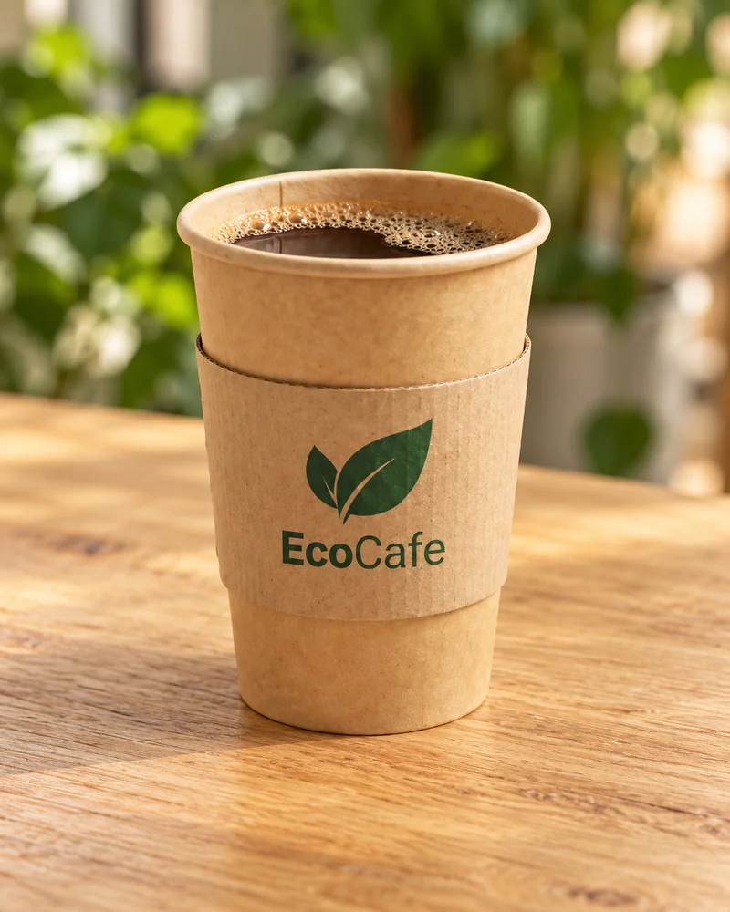
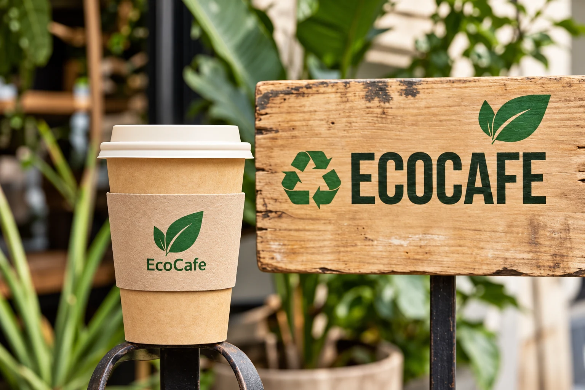
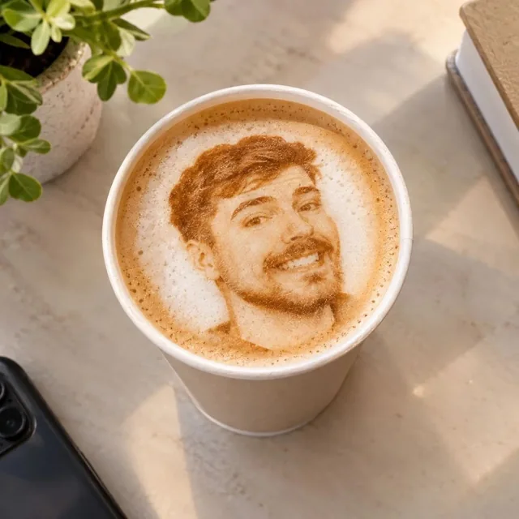
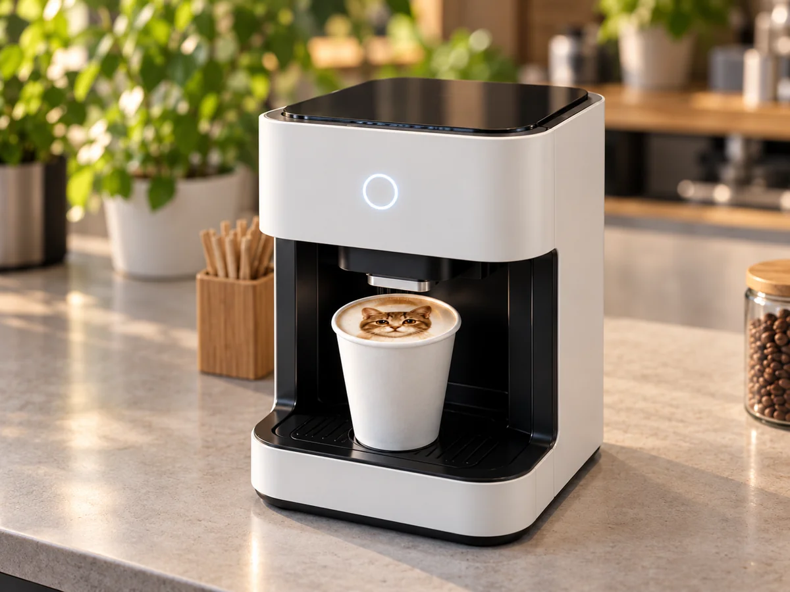
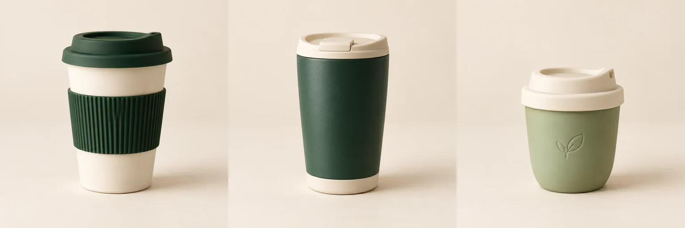

Американо
220 ₽200 мл
Эспрессо с горячей водой.
СКОРО В ЦЕНТРЕ ШАХТ
Любимый вкус. Тёплая встреча.
И ваше фото на пенке — для улыбки
с первого глотка.
Кофе от 220 ₽ Печать фото — 50 ₽В отмеченных авторских напитках печать уже включена.

02 / ВАШЕ ФОТО НА ПЕНКЕ
Селфи, рисунок или маленькое послание.
Печать — 50 ₽ к подходящему напитку.

Сначала примерка, потом — кофе с настроением. Посмотрите, как ваш снимок может выглядеть на пенке.
Чёткий портрет или простой рисунок будет смотреться лучше.
Это приблизительный вид: оттенки и детали печати могут отличаться.
Он подскажет напиток с подходящей пенкой и поможет с печатью.
Фото остаётся только в вашем браузере. JPEG, PNG или WebP, до 8 МБ.

ТЕХНОЛОГИЯ В ДЕТАЛЯХ
Устройство наносит изображение на поверхность пенки. Бариста подготовит напиток и поможет выбрать подходящий рисунок.
Состав расходных материалов и возможность печати на выбранном напитке можно уточнить в кафе.
03 / КОФЕ С СОБОЙ
Три формы стакана для любимого кофе.
Просто посмотрите, какой вам ближе.
Визуализации коллекции. Фактические материалы и доступные модели уточняйте в кафе.

Возможность её использования уточните у бариста.
04 / БУДЕМ РЯДОМ
Готовимся к открытию
Рядом с филиалом ДГТУ
и Александровским парком.
Ориентир — ИСОиП (филиал ДГТУ), улица Шевченко, 147.
Зелёная зона на карте — планируемое расположение в радиусе 200 метров от филиала. Точный адрес, дату открытия и график сообщим позже.
Связаться с нами ↓Не удалось загрузить карту. Откройте её по ссылке ниже.
200 мМеняйте масштаб кнопками + и −. На компьютере карту можно перемещать мышью или стрелками клавиатуры.
Открыть карту Шахт ↗ПЕРЕД ПЕРВЫМ ВИЗИТОМ
Конечно. Классические напитки можно выбрать без печати. Отметка «Печать включена» в авторском меню означает, что она уже входит в цену.
Никуда: примерка работает только в вашем браузере. Для печати покажите оригинал бариста в кафе.
Пока можно посмотреть меню и собрать корзину — она сохраняется в этом браузере. Для вопросов о заказе свяжитесь с кафе. Оплаты и автоматической отправки заказа на сайте нет.
В карточках указаны основные ингредиенты. Перед заказом уточните у бариста полный состав и возможные следы аллергенов, особенно молока, орехов и глютена.